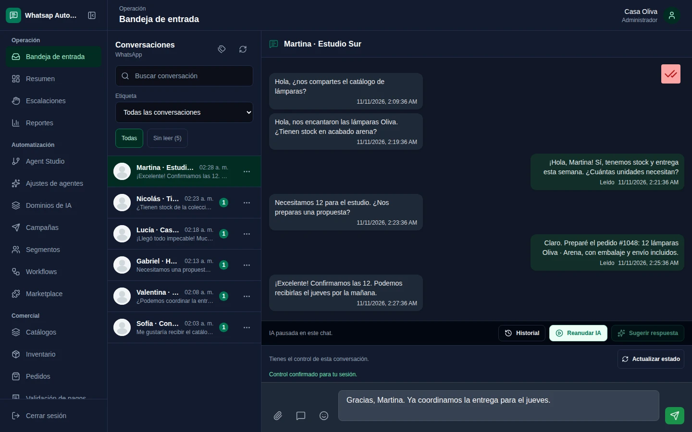
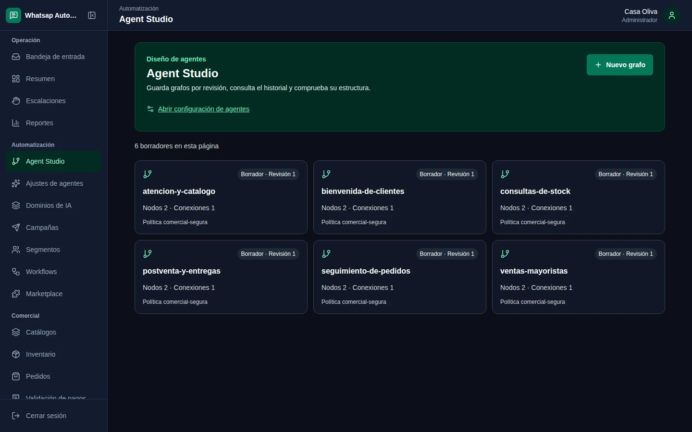
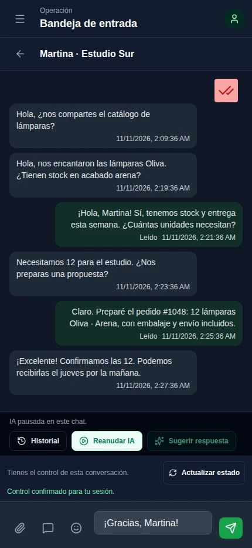

Un catálogo conectado al chat
El agente consulta productos dentro de su alcance y tu equipo abre el pedido desde la conversación.
Explorar el producto
Conversaciones, agentes de IA y tu equipo.
Lleva cada consulta del chat al catálogo, al pedido y al
seguimiento.
Construido sobre
tecnología que conoces.
Una vista compartida
Tu equipo encuentra el historial, entiende qué pasó
y continúa desde donde hace falta.


Conversaciones y estados de entrega que puedes recuperar al volver.
Toma el control, pausa la IA y continúa la atención con contexto.
Usuarios, conexiones y datos con permisos por empresa.
IA con dirección
Diseña agentes, evalúa sus respuestas y publica una revisión para WhatsApp. Elige cuándo sugerir y cuándo responder automáticamente.
Consulta el catálogo y prepara una sugerencia. La persona la revisa y decide qué enviar.
CatálogoPermisosRevisión publicada
Del mensaje al siguiente paso
El agente consulta productos dentro de su alcance y tu equipo abre el pedido desde la conversación.
Explorar el productoRelaciona la consulta con el pedido y vuelve al historial para continuar la atención.
Ver el recorridoRevisa comprobantes y estados de conciliación interna de Mercado Pago con acceso de administrador.
Consultar el alcancePara quienes construyen
Una API con contratos tipados, SDK de TypeScript y Python, y una CLI para integrar la plataforma en tus herramientas.
import { AutomatClient } from '@whatsap-automat/sdk';
const automat = new AutomatClient({
baseUrl: 'https://tu-servidor.example/api/v1',
token: process.env.AUTOMAT_TOKEN,
});
const conversation = await automat.conversations.get('42');
console.log(conversation.status);
También a mano
La interfaz web se adapta a móvil. La release incluye además un APK Android ARM64 de QA para evaluar el cliente nativo.
Descargar APK de QALa imagen muestra la web móvil. El APK está firmado para QA; la validación nativa en dispositivo sigue pendiente.
Empieza desde el código
Explora la plataforma, revisa la documentación
y prepara tu propio espacio de trabajo.
El código y los artefactos de GitHub requieren acceso al repositorio.